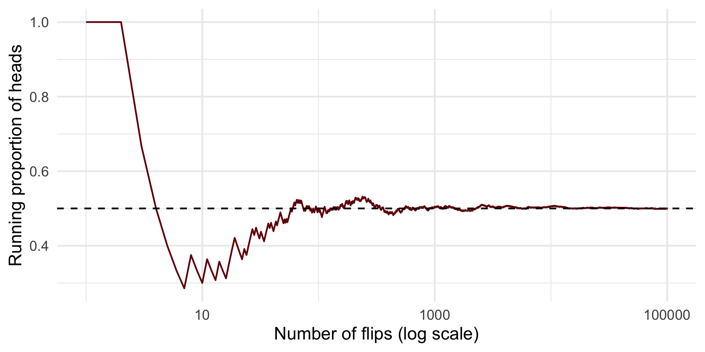
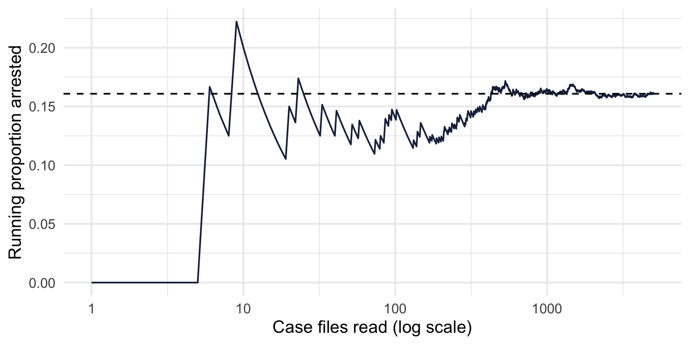
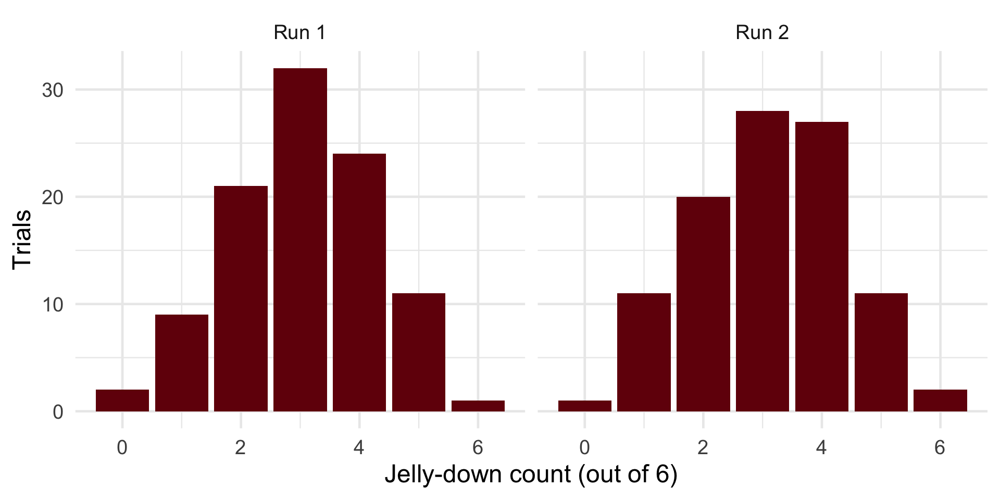
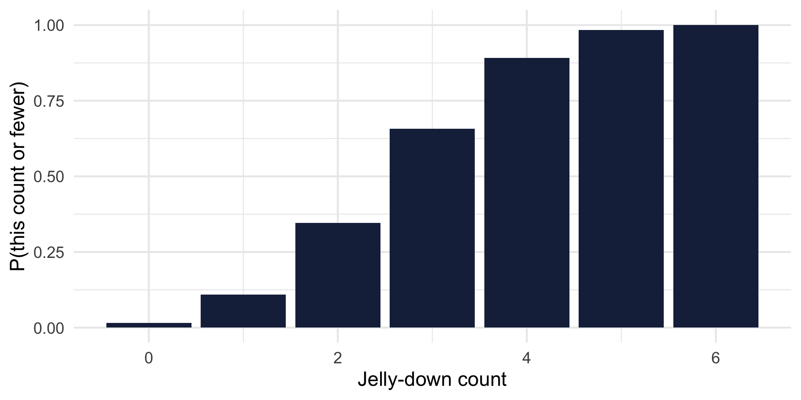
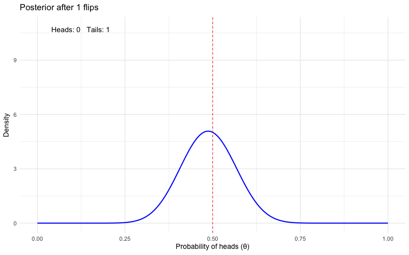

[1] "heads" "heads" "heads" "tails" "tails" "tails" "heads" "tails" "heads"
[10] "heads"[1] 0.6CRJU 705 · Session 3 · Fall 2026
Homework 2 — questions on central tendency, dispersion, or the distributions?
Anything from Lab 2 (ggplot) still shaky? We use every one of those tools again today.
R4DS thread: you read Ch. 3 (Data transformation) & Ch. 4 (Code style) — today’s lab puts them to work.
Topic: Essentials of probability
Learning goals: reason with outcome and contingency tables; generate random distributions in R; reverse a conditional with Bayes’ theorem.
Today’s rule: don’t take a probability claim on faith — simulate it and watch it happen.
Statistics thread — lecture + homework
Stanton Ch. 2 → probability, conditional thinking, and a first pass at Bayes’ theorem
Wrangling thread — lab
R4DS Ch. 3–4 → the dplyr verbs: filter(), arrange(), mutate(), summarize(), count()
The two threads meet at the Session 7 workshop — the stats thread makes you a careful consumer of evidence; the wrangling thread is why your final project won’t hurt.
Claim: a fair coin lands heads with probability 0.5. Don’t trust me — flip some coins:
[1] "heads" "heads" "heads" "tails" "tails" "tails" "heads" "tails" "heads"
[10] "heads"[1] 0.6You just met the two verbs that power every simulation this semester:
sample() — run one random event (flip the coins, drop the toast)replicate(k, expr) — repeat the whole recipe k times and collect the answersrbinom() compresses “flip six coins and count the heads” into a single calllln <- tibble(flip = sample(c(1, 0), size = 100000, replace = TRUE)) |>
mutate(n_flips = row_number(),
running_prop = cummean(flip))
ggplot(lln, aes(n_flips, running_prop)) +
geom_line(color = crju_colors["garnet"]) +
geom_hline(yintercept = 0.5, linetype = "dashed") +
scale_x_log10() +
labs(x = "Number of flips (log scale)", y = "Running proportion of heads")Wobbly early, pinned to 0.5 eventually. A probability is the value the long-run proportion settles on. Every probability “fact” today gets this treatment.

Our anchor data: 30,000 real Chicago incidents from 2025. Each incident either ended in an arrest or didn’t — 30,000 recorded trials.
Pick a 2025 incident at random and the probability it ended in arrest is about 0.16 — arrest is the exception, not the rule.
(arrest is TRUE/FALSE; mean() of a logical is the proportion of TRUEs. You’ll use this trick constantly.)
Read case files one at a time, tracking the running arrest proportion:
running <- tibble(arrest = sample(crimes$arrest, size = 5000)) |>
mutate(n_cases = row_number(),
running_prop = cummean(arrest))
ggplot(running, aes(n_cases, running_prop)) +
geom_line(color = crju_colors["navy"]) +
geom_hline(yintercept = mean(crimes$arrest), linetype = "dashed") +
scale_x_log10() +
labs(x = "Case files read (log scale)", y = "Running proportion arrested")The first few dozen cases can wander far from 0.16. Thousands pin it down. Small samples lie; long runs don’t.

Imagine a restaurant where the waiters always drop the food. Each order = six pieces of toast; each piece lands topping-down or topping-up.
Here’s data from 100 trials:
# A tibble: 7 × 3
jelly_down trials prob
<int> <dbl> <dbl>
1 0 4 0.04
2 1 9 0.09
3 2 20 0.2
4 3 34 0.34
5 4 21 0.21
6 5 11 0.11
7 6 1 0.01drops <- rbinom(n = 100, size = 6, prob = 0.5)
# rbinom() generates random trials of the "binomial distribution"
# n = 100 gives the number of trials
# size = 6 asks for six pieces of toast in each trial
# prob = 0.5 says there's an even (50:50) chance of jelly-down or jelly-up
tibble(jelly_down = drops) |> count(jelly_down)# A tibble: 7 × 2
jelly_down n
<int> <int>
1 0 1
2 1 8
3 2 23
4 3 32
5 4 22
6 5 13
7 6 1Compare to the reality-show table — same shape, without filming a single waiter.
two_runs <- tibble(
run = rep(c("Run 1", "Run 2"), each = 100),
jelly_down = c(rbinom(100, size = 6, prob = 0.5),
rbinom(100, size = 6, prob = 0.5))
)
ggplot(two_runs, aes(jelly_down)) +
geom_bar(fill = crju_colors["garnet"]) +
facet_wrap(~run) +
labs(x = "Jelly-down count (out of 6)", y = "Trials")Same process, different picture — sampling variability. 100 trials is still a shortish run. Try running it yourself!

The “theoretical” binomial probabilities are just what the simulation converges to:
At 100,000 trials, simulated and theoretical probabilities agree to within a few thousandths. Theory is the long run; simulation is how we watch the long run.
# A tibble: 7 × 4
jelly_down n simulated theoretical
<int> <int> <dbl> <dbl>
1 0 1545 0.0154 0.0156
2 1 9644 0.0964 0.0937
3 2 23351 0.234 0.234
4 3 31040 0.310 0.312
5 4 23353 0.234 0.234
6 5 9418 0.0942 0.0937
7 6 1649 0.0165 0.0156“What’s the probability of 3 or fewer jelly-down?” Add up the outcomes as you go:
Each bar = probability of that count or fewer. The last bar is always 1 — rule #1 again.

Now each falling piece of toast has two classifications: how it lands (down/up) and its topping (jelly/butter). Ten dropped pieces:
# A tibble: 2 × 3
topping Down Up
<chr> <dbl> <dbl>
1 Jelly 2 1
2 Butter 3 4A contingency table: rows = one classification, columns = the other, cells = counts of events with both.
The row/column sums live in the margins of the table — hence marginal probabilities.
Jelly landed down 2/3 of the time (0.67); butter 3/7 (0.43). Is jelly really doomed — or is 10 pieces of toast just a short run? Simulate a world where topping makes no difference:
[1] 0.611Even with no real difference, chance alone produces a gap at least this big well over half the time. Ten drops can’t answer the question.
(This simulate-a-boring-world move is the seed of hypothesis testing — coming in Session 6.)
Same structure, real stakes — crime category × arrest, 30,000 Chicago incidents:
# A tibble: 3 × 3
crime_category `FALSE` `TRUE`
<chr> <int> <int>
1 Other 7867 2614
2 Property 9615 756
3 Violent 7694 1454count() gets the cell counts; pivot_wider() lays them out as the table. This is today’s lab skill set doing probability work.
Joint — divide every cell by the grand total:
# A tibble: 6 × 4
crime_category arrest n p
<chr> <lgl> <int> <dbl>
1 Other FALSE 7867 0.262
2 Other TRUE 2614 0.0871
3 Property FALSE 9615 0.320
4 Property TRUE 756 0.0252
5 Violent FALSE 7694 0.256
6 Violent TRUE 1454 0.0485P(Property and arrest) ≈ 0.025 — a joint probability.
Marginal — collapse one classification:
# A tibble: 3 × 3
crime_category n p
<chr> <int> <dbl>
1 Other 10481 0.349
2 Property 10371 0.346
3 Violent 9148 0.305P(Property) ≈ 0.35 — a marginal probability, next to the joint P(Property and arrest) ≈ 0.025 from the last slide.
Back at the toast restaurant — hours worked by four servers:
hours <- tribble(
~day, ~Anne, ~Bill, ~Calvin, ~Devon,
"Monday", 6, 0, 5, 8,
"Tuesday", 0, 6, 6, 0,
"Wednesday", 8, 5, 0, 8,
"Thursday", 4, 6, 5, 8,
"Friday", 8, 8, 5, 8,
"Saturday", 8, 10, 8, 8,
"Sunday", 0, 3, 6, 0
)
hours_long <- hours |> pivot_longer(-day, names_to = "server", values_to = "hours")Two interesting questions:
Every cell divided by the grand total (147 hours) — the joint probabilities:
# A tibble: 7 × 5
day Anne Bill Calvin Devon
<chr> <dbl> <dbl> <dbl> <dbl>
1 Monday 0.0408 0 0.0340 0.0544
2 Tuesday 0 0.0408 0.0408 0
3 Wednesday 0.0544 0.0340 0 0.0544
4 Thursday 0.0272 0.0408 0.0340 0.0544
5 Friday 0.0544 0.0544 0.0340 0.0544
6 Saturday 0.0544 0.0680 0.0544 0.0544
7 Sunday 0 0.0204 0.0408 0 But question 1 isn’t about the whole table — Bill being your server rules out every other column.
Isolate Bill’s column, then re-scale it so it sums to 1:
Most likely Saturday (0.26). That renormalization — shrink the world to the condition, then re-proportion — is conditional probability, and it’s the core move behind Bayes’ theorem at the end of today.
# A tibble: 7 × 4
day server hours p_day_given_bill
<chr> <chr> <dbl> <dbl>
1 Saturday Bill 10 0.263
2 Friday Bill 8 0.211
3 Tuesday Bill 6 0.158
4 Thursday Bill 6 0.158
5 Wednesday Bill 5 0.132
6 Sunday Bill 3 0.0789
7 Monday Bill 0 0 Same move, conditioning the other way:
# A tibble: 4 × 4
day server hours p_server_given_monday
<chr> <chr> <dbl> <dbl>
1 Monday Anne 6 0.316
2 Monday Bill 0 0
3 Monday Calvin 5 0.263
4 Monday Devon 8 0.421Devon (0.42). Note the asymmetry: P(Saturday | Bill) and P(Bill | Saturday) are different questions with different answers. The direction of conditioning matters — a lot. Bayes’ theorem, in a few minutes, is the formula for flipping it.
In real data, conditional probability is just subset, then take the mean:
# A tibble: 3 × 3
crime_category p_arrest n
<chr> <dbl> <int>
1 Violent 0.159 9148
2 Other 0.249 10481
3 Property 0.0729 10371P(arrest | Property) ≈ 0.07; P(arrest | Other) ≈ 0.25. Knowing the crime category changes the arrest probability — the two variables are dependent.
# A tibble: 1 × 2
p_arrest n
<dbl> <int>
1 0.971 919P(arrest | narcotics) ≈ 0.97. Is Chicago spectacular at solving drug crimes?
No — a narcotics record usually exists because someone was arrested. Conditional probabilities describe the data-generating process, not just the world. Always ask how did this row get into the data?
[1] 0.1608# A tibble: 2 × 3
domestic p_arrest n
<lgl> <dbl> <int>
1 FALSE 0.161 24194
2 TRUE 0.160 5806P(arrest | domestic) and P(arrest | not domestic) are essentially identical to the overall P(arrest) — in this sample, knowing an incident was domestic tells you almost nothing about arrest.
Definition: A and B are independent when P(A | B) = P(A). Conditioning that moves the number = dependence; conditioning that doesn’t = independence.
\[ \underbrace{P(H \mid \text{data})}_{\textbf{posterior}} \;=\; \frac{\overbrace{P(\text{data} \mid H)}^{\textbf{likelihood}} \;\times\; \overbrace{P(H)}^{\textbf{prior}}} {\underbrace{P(\text{data})}_{\textbf{evidence}}} \]
Start moderately confident a coin is fair — a prior belief centered on “fair” — then flip it 100 times and update after every flip:

This morning we watched a coin’s long-run proportion converge. Same coin, new question: what do we believe about it, updated flip by flip? Beliefs are provisional, quantified, and revised by evidence — that is the entire philosophy in one gif.
A screening problem (any resemblance to a frequent co-author is coincidental):
Two questions that sound identical — and are not:
| Test says + | Test says − | Total | |
|---|---|---|---|
| Sick (1%) | 9 caught | 1 missed | 10 |
| Healthy | ~50 false alarms | ~941 cleared | 990 |
| Total | ~59 | ~942 | 1,000 |
Look closely — this is a contingency table, and P(sick | +) is the same move as P(day | Bill): shrink to the “test says +” column, re-proportion.
\[ P(\text{sick} \mid +) \;=\; \frac{9}{9 + 50} \;\approx\; 15\% \]
The test is “90% accurate” — and a positive result still means you are probably fine.
filter(), arrange(), mutate(), summarize(), count() (lab page)CRJU 705 · Session 3